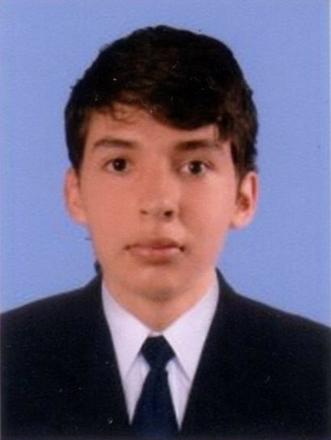

Información
Nombre: Joan Manuel Calderón
Edad: 23 años
Sexo: Masculino
Ciudad: Tuluá
Correo: joan.calderon@correounivalle.edu.co
Proyectos
| Proyectos | Tecnologías | Explicacion |
|---|---|---|
| Gestor de gastos personales |
Vue.js, express |
Herramienta que permite registrar gastos, con la finalidad de tener un mejor control de las finanzas personales. |
| Gestor de tareas |
React.js, django, mongodb |
Es una herramienta donde se puede organizar las tareas de forma sencilla. |
| Juego de la serpiente |
Python |
Juego de la serpiente clásico, la interfaz fue implementada con turtle, este proyecto me permitió mejorar mis conocimientos lógicos con el lenguaje de programación python |
| Buscaminas |
C++ |
Este proyecto fue realizado para la materia de programación orientada a objetos, es un buscaminas clásico que funcionaba en la terminal, el juego permitía los modos de jugador vs jugador y jugador vs máquina. |
Hobbies
Viajar

Música
Dormir
Trotar
Propuesta de trabajo de grado
Aplicación móvil que se centra en impartir, a través de una estrategia educativa, una mayor concientización sobre la conservación y cuidado de la biodiversidad, que se encuentra la laguna de sonso (Buga), así como una mayor protección para la considerable cantidad de diferentes especies de aves.